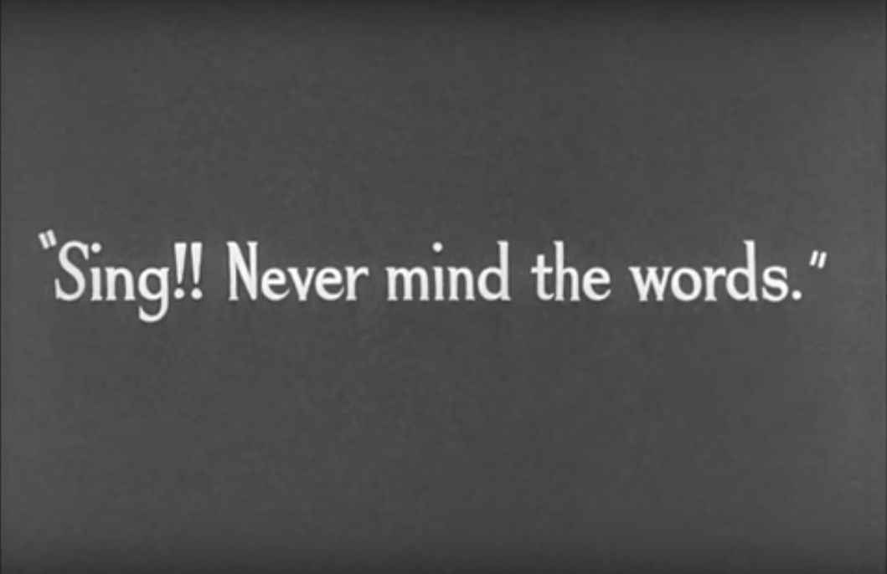

Composición I
Clase 008

Diálogo
Bela Bartok


Canción Unitaria
Los Pollitos Dicen
Canción Unitaria de Subdivisión Binaria
Chaplin Modern Times 'non-sense song'
"Papageno" - La Flauta Mágica
Wolfgang Amadeus Mozart
"Ay, porqué tuve que venir a este mundo" (“Ах зачем я на свет появился”) de la película "Republica Shkid"
Sergey Slonimsky
Postdata Data
x
008